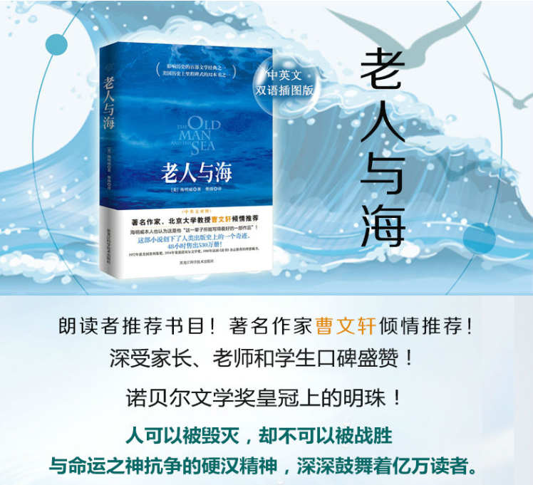
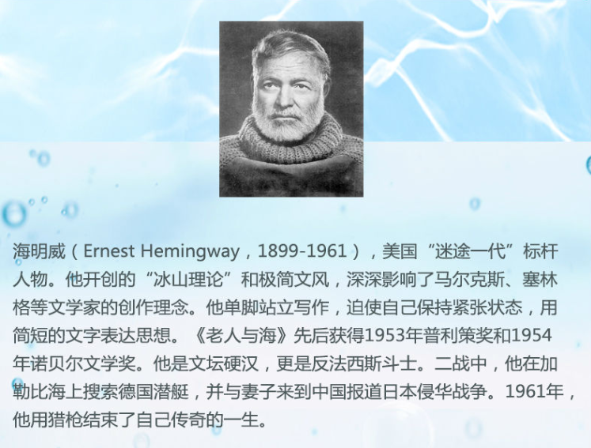
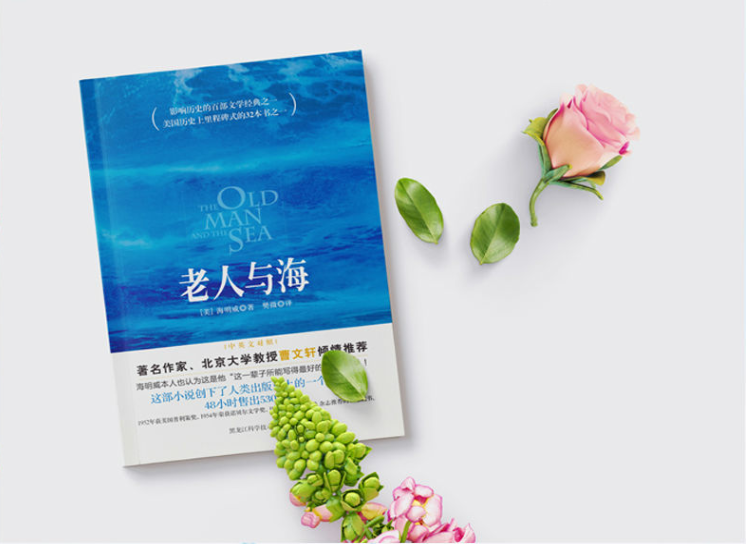

首页



Previous
Next
商品名称: 《老人与海》
价 格:￥18.50
商品类型：书籍
运费:包邮
库存：有货
1.此商品不支持7天无理由退货
2.此商品由 海囤全球 发货并提供售后服务
3.此商品不提供国内购物发票
4.此商品支持白条30天免息或分期支付，不可使用京豆、京东卡、京东E卡、余额支付，不支持货到付款
5.根据中国海关总署要求，您所购买的商品清关入境需要提供身份证信息进行入境申报，请您配合。我们不会向第三方泄露您的资料，请您放心
立即购买
加入购物车
详 情
《老人与海》是20世纪小说史上一部不可多得的杰作，其作者海明威是20世纪非常著名的小说家之一。海明威自己也表示，《老人与海》是他“这一辈子所能写得最好的一部作品”。 这部小说是一部经典的励志文学作品，其颂扬的是一种即使一无所获也永不放弃的奋斗精神，就像小说主人公桑迪亚哥所说的“一个人可以被毁灭，可就是不能被打败”。 小说的主人公桑迪亚哥是一位捕鱼经验十分丰富的老人。在故事开始时，老人已经一连八十四天没有捕到一条大鱼，生活都成了问题，可他并没有气馁，没有被现实的困境所打败。在第八十五天的清晨，他决定去深海区寻回自己的运气。幸运的是，这次他意外地捕到了一条大得出奇的大马林鱼。可是，如此大的鱼自然是很难捕捉的，结果他和这条马林鱼周旋了两天两夜。最后，尽管大鱼被制伏，但他自己也已经筋疲力尽。 好景不长，正当他将大鱼绑在船舷边准备回家时，却遭到了一条接一条的鲨鱼的“打劫”。为了保护自己费尽心力获得的“战利品”，他先后拿鱼叉、刀子、棍子当武器，击败了一条条来势凶猛的鲨鱼。遗憾的是，鲨鱼最终还是把大鱼吃了个精光，可即便如此，他还是把大鱼巨大的骸骨带回了村里。 从小说的整体来看，作者描写了老渔人桑迪亚哥在海上三天三夜的历险经过，以及他如何在艰苦环境下保持人的尊严的坎坷心路历程。而桑迪亚哥的形象其实是海明威以前塑造的一系列猎人、战士、拳击家和斗牛士等“硬汉”形象的升华和总结。 小说都取材于现实，《老人与海》也不例外。在该小说中，作者把自己的理想和对生活的反思都寄托在老人桑迪亚哥身上。桑迪亚哥与大鱼的周旋、与鲨鱼的搏斗象征着他与自己命运的抗争。虽然桑迪亚哥经过殊死搏斗并没有扭转“战利品”被夺走的现实，但他的奋斗经历依然证明了他顽强不屈、永不言败的硬汉精神。 桑迪亚哥没有屈服于自己的命运，没有向厄运低头，他的斗志永远是向上的、向前的。即便是凶猛的大鱼、凶狠的鲨鱼、恶劣的环境以及软弱的意志，他都一一咬牙克服了。虽然他在历经艰难之后，只得到一副空空如也的骨架，但在精神上他是“硬汉”，是永远打不败的，而这正是海明威所崇尚的，也是大家应该学习的。 此外，人自身的矛盾和人与自然的冲突在桑迪亚哥身上体现得淋漓尽致。桑迪亚哥和大海之间的矛盾也象征着人与自然之间的冲突，这种冲突虽然无从避免，但人类可以通过自己的行动去改善与调和，因为人与环境的和谐决定着人类的出路和最终命运。
评 价
暂无评价